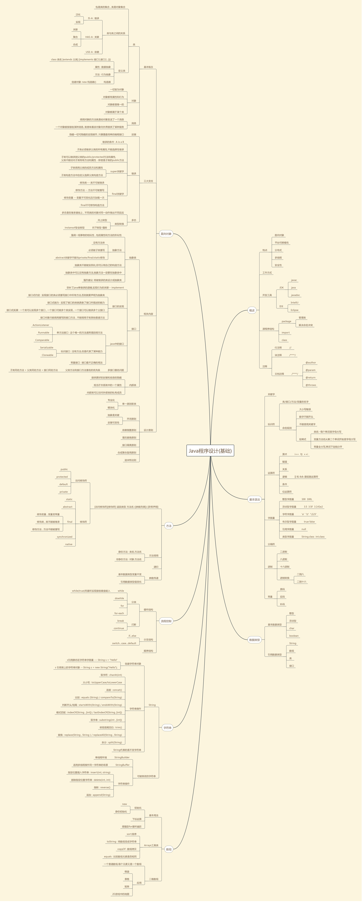

Introduction
01_JAVA介绍
chapter01_介绍
chapter02_变量和常量
chapter03_数据类型
chapter04_运算符
chapter05_流程控制
chapter06_数组
chapter07_方法
02_面向对象
chapter08_面向对象_1概述
chapter08_面向对象_2包管理
chapter09_封装
chapter10_单例模式
chapter11_继承_1概述
chapter11_继承_2抽象类
chapter11_继承_3接口
chapter12_多态
chapter13_内部类
chapter14_包装类
chapter15_常用类_1Object
chapter15_常用类_2String
03_常用工具
chapter16_异常_1概述
chapter16_异常_2处理_trycatch
chapter16_异常_3处理throw
chapter16_异常_4处理自定义
chapter17_多线程_1概述
chapter17_多线程_2线程生命周期
chapter17_多线程_3线程管理同步和通信
chapter18_IO流
chapter19_集合_1概述
chapter19_集合_2List
chapter19_集合_3Set
chapter19_集合_4Map
chapter19_集合_5泛型
chapter19_集合_6集合工具类
Published with GitBook
Introduction
写在前面
这是一个java基础及面向对象的基本的书

更新日志:
2018-01-13 基本框架完成
results matching "
"
No results matching "
"